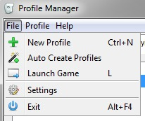
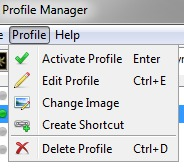
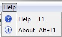

New Profile, creates a new profile for the current game.
Auto Create Profiles, attempts to create profiles based on the saved games and folders in the current game's saved game folder. A profile will be created based on the name of the character in the saved game file and from the name of any folders found in the save game folder.
Launch Game, functions the same as the launch game button.
Settings, opens the settings and configuration window. See the Configuration and Settings page for more information on this window.
Exit, causes the Profile Manager to close.

The menu options in this menu will not become enabled until a profile is selected from the profile list.
Activate Profile, activates the current profile. When a profile is active the game will load and save games to this profile.
Edit Profile, brings up a dialog where you can edit details about a profile like it's name. See How to edit a Profile for more information.
Change Image, brings up a window where you can set the profile's image.
Create Shortcut, creates a desktop shortcut that will active the profile and then start it's game.
Delete Profile, deletes the selected profile, it also provides the option to delete the profile's saved games.

Help, displays this help documentation (obviously).
About, displays a window with information about the profile manager.